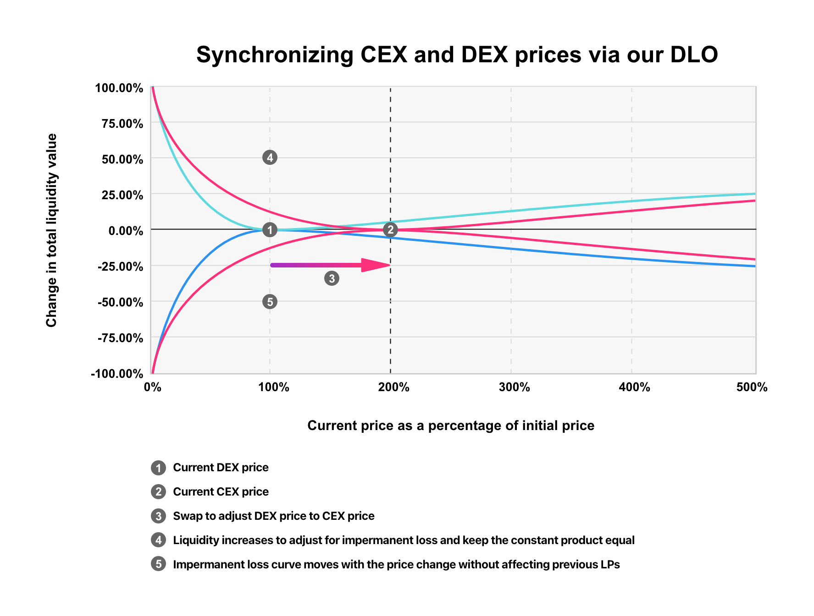
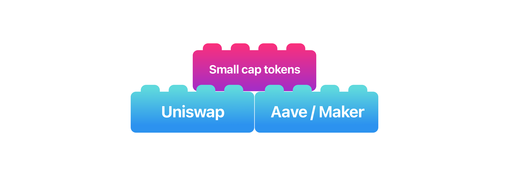

Table of Contents

Table of Contents
XFai and Our DLO
Version 1.0 Draft
XFai is a set of autonomous liquidity management smart contracts (strategies) for tokens with low trade volumes and market caps. XFai allows holders of 'small cap' tokens to earn returns on their 'small cap' tokens when providing liquidity and therefore increase their position in those projects.
General Company Hypothesis
We believe that no one can effectively anticipate where the crypto markets are heading within any reasonable time frame, however, we believe we have come up with a set of tools which allows XFai to make profits from the expected future volatility/high variance1 in the crypto markets. While daily variance compared to 2-5 years ago has reduced in the crypto market, trading days of extremely high variance in relation to the liquidity of 'small cap' tokens has increased. The XFai tool set makes it possible to maximize the profitability from periods of high variance.
The profitability of XFai is therefore directly related to the general variance of a broad set of tokens, rather than just the top tokens. Adding to that the relative variance of the top tokens (such as BTC and ETH) is low, while the variance of most other tokens is high, we have a solution for making profit without taking positions in specific tokens. XFai's approach is to not take on any speculation risk, and only earns fees from optimally deploying the speculative assets of others. Any tool which allows traders to take profitable positions in high variance periods is inherently useful. We believe XFai can be a valuable tool for traders to hedge against high variance days, as well as for them to adjust their portfolio based on their current portfolio's variance.
Uniswap is currently the largest single exchange, bigger than Coinbase, Binance, and any other exchange in terms of its number of token pairs and known liquidity in its overall pools.2, 3
Why Variance Won't End in the Crypto Space 4
The above is a variance index of BTC to USD in terms of 30-day average USD returns. Average variance has decreased considerably over the years, as more USD liquidity has been onboarded. Ethereum and other large coins have a similar decreasing variance.
This chart shows the 30-day average USD returns of BTC, ETH, and LTC compared over certain time periods. The important takeaway is that coins/tokens with less aggregate USD liquidity standing by (e.g., Exchange order books, brokers, traditional market makers, Autonomous Market makers, etc.) experience relatively higher average variance.
This is why our current and future toolset is focused on the high variance tokens, i.e., the small cap/small liquidity tokens, all without exposing ourselves to the actual underlying tokens themselves.
Problem
Current 'small cap' tokens (defined as any token with a market cap below 400M USD) holders have no way of earning returns denominated in their tokens. Larger liquidity tokens such as DAI, ETH, etc. can earn returns on various liquidity pools and yield farming platforms. Tokens which earn returns by being held have in turn a higher market value and higher liquidity, providing a positive feedback loop for investors.
Furthermore, 'small cap' tokens are stuck on CEXs where their liquidity is being deployed by the CEX hidden market makers (at best), without returning any fees returned/rewarded to the token holders themselves. In fact, hidden CEX market makers dampen or even crash the price of the token as they make money off the fees denominated in stablecoins, rather than the 'small cap' tokens themselves. This happens because exchanges are able to use the liquidity provided by their users for market making on their own exchange without ever having to pay most liquidity providers. By doing so they make fees denominated in both the tokens as well as USD. The Exchanges however do not want to hold an active position in the tokens and therefore immediately sell the token against USD, effectively continuously lowering the price of the token against USD.
DEXs such as Uniswap, Balancer, etc. however do share exchange fees with token liquidity providers. Today, 'small cap' tokens liquidity is stuck on CEXs, as all price discovery is happening there, leading to potential liquidity providers to DEXs to hesitate to put their tokens in DEXs due to the lack of liquidity. This is a classic catch 22 problem keeping the 'small cap' tokens from transitioning to on-chain DEXs. Our 'small cap' tokens liquidity pool solution resolves this problem by bridging the CEX and DEX liquidity without ever having to manage token liquidity or do trades on CEXs.
Without such an opportunity cost to not deploying a token productively in time, no time preference for the token develops (time preference of money) and therefore no marginal returns to holding the token. This effectively means that speculators and investors need to be separated for any token to succeed. This can best be done by offering long-term investors a return in terms of the token itself (i.e. time value of money) and leave the current token price (i.e. exchange value) to the speculators to perpetrate price. With our method the speculators are effectively funding the long-term investor returns out of DEX fees.
At each stage of the crypto ecosystem at least one such time value of money function existed which allowed the project to grow: Bitcoin holders used to invest in Bitcoin denominated mining bonds, Ethereum holders can stake natively via proof of stake, and now with the DLO 'small cap' token holders can finally earn returns on their token.
XFai makes holding 'small cap' tokens profitable similar to how liquidity pools have made larger tokens profitable to hold, kickstarting the positive feedback loop for the 'small cap' tokens.
Our Solution on a High Level
The DEX Liquidity Oracle (DLO)
Our DLO is a revolutionary DeFi oracle which instead of providing only data in the form of price feeds and triggering 3rd party contracts, also actively provides and manages token liquidity on Uniswap and similar DEXs. This in turn allows 'small cap' token holders to earn token denominated returns on autopilot.
Our DLO deploys 'small cap' tokens loaned by their holders via our strategy contract to Uniswap and similar pools for shaping the Uniswap curves in such a way as to match and exceed the prices to volume ratio of CEXs. This will organically pull first large traders and investors, and later smaller ones as well, from the CEXs. Liquidity, price discovery, and therefore fees will migrate organically from CEXs to DEXs. Fees accumulated are given to the 'small cap' token lenders, which increases their financial position in those tokens. From a financial perspective our DLO performs for 'small cap' tokens the same as Bitcoin Bonds and Ethereum staking allows for BTC and ETH.
High Level Steps Taken by the DLO
1. Users add their tokens ('small cap' tokens, USDT, ETH, etc.) to our liquidity pools. Our contract takes tokens out of these pools continuously and deploys them for syncing the curves. The user only need provide one token at a time and is never exposed to more than one token at a time.
2. Our DLO reads exchange APIs on multiple large orderbooks for those token pairs.
3. It constructs synthetic curves by averaging the orderbook volume out. One synthetic curve per pair per exchange is created.
4. The same synthetic pair curves across multiple exchanges is combined to create a single synthetic curve per pair. This synthetic curve is then used as the reference curve against Uniswap, until the Uniswap liquidity matches or exceeds the combined liquidity of all exchanges.
5. The strategy contract then adds or removes liquidity of tokens to the actual Uniswap curves until it matches the synthetic curve.
6. This process continuously repeats to keep both curves in sync.
Synthetic Curve
Our synthetic curve approach is pioneering and unique. It is really only possible because of our CEX-to-DEX target, whereby the DLO utilises the synthetic curve as the liquidity target for the real Uniswap curve as long as the CEX is the dominant liquidity. We are effectively translating all possible prices of an order book from a traditional CEX into a continuous Automated Market Maker (AMM) curve. Therefore, the DLO can be viewed as a translator between legacy CeFi and DeFi.
By getting live orderbook data from an exchange and analyzing the overall shape and depth of the orderbook at each price point, we know how much liquidity an equivalent AMM would require to have the same or less price slippage as compared to the orderbook. The actual slippage will depend on the average size of the trades performed on the CEX vs DEX, but nonetheless we are able to construct such a synthetic curve for each token pair.
The curve is synthetic for two reasons:
It is created synthetically from an orderbook which does not behave like an AMM in reality, therefore the "translation" is not a true behavioral "translation".
The curve is only used transitively as a synthetic reference to compare the actual Uniswap curve to modify it's liquidity. It never itself gets sent to the blockchain, therefore it remains transient and synthetic.
Reducing/Managing Impermanent Loss on Uniswap for Profit
The Uniswap curve formula is extremely straight forward, which is also why out of all DEXes it generally also has the lowest gas fees:
usdc_liquidity_pool * token_liquidity_pool = constant_product
From which we can derive the value of the liquidity pool in USDC terms for this particular pair:
USDC_liquidity_pool = sqrt(constant_product * USDC_price)
Because in this case USDC is both the token in the pool as well as the denominator of the value of both the USDC and token pool, we can simply continue by calculating the value of the liquidity pool of the token only:
token_liquidity_pool = sqrt(constant_product / USDC_price)
This last equation explains how a drop or increase of the price of the token disproportionally increases the total value of the pool.
The definition of Impermanent Loss on the other hand becomes:
Impermanent_loss = 2 * sqrt(price_ratio) / (1+price_ratio) - 1
Which is visualized as:
What most Uniswap liquidity providers are not aware of is that the impermanent loss (as compared to just holding both tokens) will happen regardless of whether the token price increases or decreases. In fact, even if the price of one of the tokens greatly increase, the more the increase from the time at which the original liquidity was deposited, the greater the loss. Uniswaps value proposition is therefore actually extremely flawed.
There is only one way to resolve this problem, as we can identify via the original Liquidity Pool Value and Impermanent Loss equations. The liquidity provider has to manage his liquidity in real time on Uniswap by increasing or decreasing liquidity actively to match the price movement of the target token.
impermanent_loss = 2 * sqrt(price_ratio) / (Delta 1 +price_ratio) - Delta 1
Where Delta 1 is the delta (difference) between the current net number of tokens and new number of tokens in the liquidity pool of Uniswap. This delta can be both positive (adding tokens to the liquidity pool) as well as negative (removing tokens from the liquidity pool).
By actively adding and removing liquidity from the token pool we can keep the change in total liquidity value constant and therefore get rid of impermanent loss. This explains why the DLO liquidity pools are needed as "standby" liquidity outside the pool in order to maximize the returns of the pool in USDC terms.
It also explains why our core hypothesis is one of variance: The X axis is effectively variance. By actively managing the liquidity in the pools we can keep the change in total liquidity value to 0 or slightly fluctuating around 0.

By knowing the current price of the token on the CEXs as well as on the DEX, our DLO knows what the current liquidity level in Uniswap for the token should be for a trade of the size which will move the DEX price of the token to correlate with the CEX price, without triggering impermanent loss, meaning while keeping the proportional liquidity value constant.
Therefore, the stacked transaction always starts with first increasing/decreasing the liquidity up to the point where it will be needed and then swap the tokens on Uniswap to match the price with the Exchange price. This shift of both the liquidity and price therefore leads to the effective shift of the impermanent loss curve.
Force Multiplier
The bigger the difference between the synthetic curves and Uniswap curves is, the more we can reduce relative slippage, by doing so we are also increasing potential fees for liquidity providers as we are using a larger percentage of the token liquidity pool for revenue generation (i.e. larger deployment of capital).
Price slippage between the synthetic curve and the real curve is the result of relative liquidity differences between the two (as shown below) due to, in this case, injecting liquidity into Uniswap we match the synthetic and real curve, removing all slippage and incentivizing traders to trade on-chain.
The side-effect of a very big relative difference between the synthetic and the real curve is that our strategy now owns a larger percentage of the overall token liquidity in the Uniswap pools, and therefore earns disproportional fees compared to a small synthetic-to-real curve difference.
The larger the percentage of the overall pool that we own due to the larger difference, the larger the percentage of the fees which we get from Uniswap on the deployed token capital. As long as end-users maintain their liquidity in our DLO pools, it means that the relative share of the overall pool in fact continues to increase faster than that of the smaller liquidity providers within the Uniswap pool due to the overall compounding effects.
No Need for Trusted 3rd Parties
Traditional on-chain settlement or liquidation mechanisms such as MakerDAO liquidity providers (called "Keepers" 5) execute trades off-chain and provide their capital at risk to Maker. We never perform any trade on CEXs and are therefore never exposed to their counterparty risk.
Other protocols which require some sort of liquidity provisioning create elaborate schemes of trusted delegates which hold money and expect to make a profit from the additional price and counterparty risk.
In our liquidity pool approach it is the liquidity providers who already have positions in those tokens who take on additional risk and who reap the rewards. In our case they are not exposed to centralized 3rd party counterparty risk and unlike Maker and similar protocols, our liquidity providers already have a position in those tokens. They only stand to gain from synchronizing the CEX and DEX curves.
Uni-Directional, No Arbitrage, Unique Oracle Service
The DLO does only unidirectional price and liquidity synchronization from CEXs to DEXs. Therefore, our strategy contract is also unidirectional and is solely concerned about optimizing liquidity and prices on-chain. Unlike other price synchronization players such as arbitragers, no part of our system ever interacts with CEXs beyond data reading and analysis. Our strategy purposefully does not deal with arbitrage between CEX and DEXs. In fact, with our DLO we expect most arbitrage opportunities between CEXs and DEXs to vanish over time.
Traditional Oracle services are only trusted data provisioning systems, bridging the gap between centrally produced data feeds, such as exchange prices, weather feeds, etc., with on-chain smart contracts which need to be triggered conditionally based on that data. Traditional oracles do not touch or manage liquidity in any form. In fact, we know of no active oracle service offering any form of liquidity management whatsoever. This is why we believe our DLO is cutting edge and a necessary tool in the DeFi space.
This is the case because traditional oracle services are primarily used for triggering automatic financial settlement conditions. This means that if the oracles would both provide the data as well as settle the contracts, they would stand to gain from the loss of the users. Settlement in this case means that a third party, meaning the oracle service, is capable of changing the outcome of a financial contract between two or more parties, without being exposed to any potential losses itself. In our case the liquidity oracle only stands to gain if and only if the token liquidity providers gain as well. This is because our liquidity oracle technically takes out a loan from the liquidity pool of tokens, and therefore shares in the risk. This is also why the DLO, unlike traditional oracles, shares in the profits as well and why incentives are aligned for maximizing the efficiency of capital deployment. Traditional Oracles without actually having an effective measure in place, posing a security risk. Simply put, our threat model and incentive model is fundamentally different and better aligned with the users needs.
Fundamental Requirements in DeFi
The point of the DLO, is to go one step further and synchronize and optimally manage the liquidity itself. We believe that we are establishing a new standard in the DeFi space because we recognize two fundamental requirements:
Due to the block/batch-based execution of blockchain based transactions and their atomic nature, as well as the fully public and permission-less nature of all data and liquidity on-chain, DeFi's main objective will be financial optimization and automatic strategies. Profiting off exclusive or preferential access to capital or credit is not possible in DeFi. We are seeing the emergence of hyper-efficient markets.
People in the traditional finance space talk about "robo advisers", but the DeFi space is several steps ahead already by implementing all investment strategies on autopilot, which means even deploying capital automatically. It is therefore impossible to profit from preferential access to capital.
Because what people actually want access to is the strategies, and not the data itself, we believe that oracles and data providers will all merge into one. Strategies which provide their own data and take on risks will gain in popularity and will for many use cases become the standard. Oracles will drop out of the picture and strategy and liquidity contracts such as Yearn, that provide their own liquidity and their own data will become the 'go to' approach in their respective niche.
We believe that due to the above points our DLO will become a dominant player in its niche by providing a sufficient efficiency for particular use cases such as synchronizing liquidity and prices. It is our goal therefore to push forward fast with our DLO liquidity oracle and become the first and only player, and soon after expand with DeFi products which follow the same principles in other DeFi niches. We expect that the strategy and capital deployment related network effects and efficiency gains from multi-dimensional or multi-product optimization to be exponential.
Beyond simply deploying all tokens in our liquidity pools, we plan on integrating 3rd party liquidity pools such as Compound, Aave, etc. for large liquidity tokens such as ETH, USDT, USDC, WBTC, etc. This is only possible because of the way our liquidity oracle works and because it is indifferent towards the source of the funds. The only constraining factors in using such 3rd party liquidity pools will be their overall liquidity available, prevailing interest rates, and collateral requirements.
Furthermore, we deploy specific strategies which optimize for both overall (global) fee returns as well as overall (global) synchronization across all Uniswap pairs under our DLO management. Our proprietary combinatorial and multi-dimensional approach will be key to maximizing returns globally.
Token holder never leave their crypto wallet such as Metamask. All tokens stay in their control with their keys without ever being exposed to central counterparty risks such as CEXs. Users can take out their funds at any point in time and are therefore 100% liquid even though their funds might have been already deployed for synchronization purposes.
CEXs by holding your funds with their keys have become enormous counterparty and systemic risk factors in the whole crypto industry. They had their place when the industry started but now, they are a net negative and a drag on the development of the industry. Their incentive is to keep the tokens off the broader DeFi ecosystem so that they continue to benefit from user fees. They therefore create what we call a "firewall" between 'small cap' tokens and the broader DeFi ecosystem. This kills the possibilities of composability and options.
The primary way they achieve this is by holding users' tokens with exchange keys rather than user keys.

Once users hold tokens with their own keys on-chain, the CEX firewall breaks down and the tokens can start to flourish. Due to XFai's DLO-Brick feature providing liquidity on-chain it becomes accessible for other DeFi projects to get information and price feeds on these smaller tokens from DEX's. This allows other projects such as Aave, Maker or Uniswap to engage these smaller tokens and results in network effects. Giving them composability while also allowing the possibility of many additional layers and derivatives. Creating a building block effect.
This is the dream of all mid-size and smaller tokens and projects: to play in the same league as the bigger ones, create a fairer playing field, have a chance to perform, and make smaller cap tokens more attractive.
Network Effects
While smart contracts themselves are trivial to fork/copy due to them always being open source and on-chain, we plan on creating various levels of network effects for our XFai ecosystem:
So far no DeFi project has been overtaken within its niche. The only way to compete against entrenched DeFi projects so far has been to create a new niche altogether. The example of Uniswap, then Balancer, and then Curve come to mind. All three exist effectively within the same DEX and liquidity pool space. They don't compete with one another however as
None of these protocols is effective and usable for the other use cases to begin with, hence they do not compete directly and do not drive fees down against one another.
In fact, Uniswap, Balancer, and Curve are very good examples as they also benefit from the composability of each project. Meta-projects such as 1inch.exchange compose the functionality of all three contracts to offer the best possible exchange rate across any number of tokens, regardless of how they are matched. Yet, even 1Inch does not compete with the underlying components, it funnels liquidity and fees to the underlying components.
The Building Block / Composability
We will work intensively on integrating with 3rd party DeFi contracts to use our supported Uniswap pairs for
Most, if not all DeFi contracts in use today use at least one of these functions. Our DLO has therefore enormous 3rd party integration potential. As there is no contract or project which provides the combined functionality of all four services today. Existing DeFi contracts are built taking this into account. With the introduction of our DLO they will modify their contracts to make use of XFai's combined services as it will make the developer's life easier because development will be faster, and financial engineering will be safer. We believe that existing contracts which do not combine all four services together will fall to the wayside, similar to how the first DEXs which used the traditional orderbook paradigm on-chain, such as 0x and Kyber, fell out of favor for Uniswap and Balancer, while having to completely redo their contracts to adapt to the new paradigm.
3rd party DeFi contracts such as future implementations of the likes of Maker and Synthetix which today use trusted delegates for CEX based liquidation will move to our DLO and liquidate without any delegates directly on-chain. This will make any price movements and slippage deterministic and will lead to many positive changes for their users such as:
We have seen this strategy be a game changer for Chainlink and various crypto wallet login providers. We would even argue that the main driver of Chainlink's success was this rapid integration with already existing 3rd party DeFi products.
The larger the number of 3rd party DeFi integrations and functional dependencies on our liquidity oracle, the lower the probability of a competitor being able to take our lead away
Possible Future Composability
A Real World DeFi Example Use Case With the Above DeFi Building Blocks
Bob has 100,000 USD worth of token B, which is a 'small cap' token which he believes will one day be worth a lot. He wants to buy the latest Sony PlayStation for his son for Christmas but does not want to have to sell his Token B as he won't get a good price for it due to an illiquid market. He now takes on traditional credit card debt at the usual high interest rate to pay for the PlayStation.
The future with XFai
Bob has 100,000 USD worth of token B, as before, however, this time he has a crypto credit card which integrates with XFai and liquidity providers in the background. Bob now goes to the store and buys with his crypto credit card the PlayStation. In the background his token is put into the XFai liquidity pool, sent via the DLO strategy to the best possible Uniswap pair, and Bob's wallet receives a wrapped token representing his managed tokens. The crypto credit card / wallet provider automatically puts the correct amount of wrapped DLO tokens into a liquidity provider and got a low interest rate DAI stablecoin loan, which was used to pay for the PlayStation. A month later Bob repays the outstanding USD denominated debt from his regular income, by buying some stablecoin having paid a miniscule interest rate over this period. In the background all his tokens are now available to him again, and he even earned more money from his DLO liquidity deposit than he spent in terms of interest. In this case Bob also has the opportunity to benefit from any potential price growth of his token B over this period adding to his gains. Crypto investors are only able to do this with the big tokens such as ETH and Bitcoin, but with XFai's DLO many more tokens will have access to the same liquidity and smart contract services. Bob's crypto holdings therefore have become like real estate in the fully global banking/lending system. The DLO will allow projects like AAVE to cover up to several hundred tokens like Bob's 'B' token from the current ~30.
Tokenomics
Exchange value is funneled to the XFIT token in several ways:
1. Variance definition: We use 'variance' and not 'volatility' because volatility almost always means price volatility but variance could include liquidity variance, it could include variance in between the synthetic curve and the real curve, it could include variance of interest rates, etc.
2. https://cryptobriefing.com/uniswaps-daily-volume-overtook-coinbase-more-80-million/
3. https://finance.yahoo.com/news/defi-boom-makes-uniswap-most-112044384.html
4. https://www.buybitcoinworldwide.com/volatility-index/
5. https://makerdao.com/en/whitepaper/#key-external-actors
6. https://vitalik.ca/general/2019/12/07/quadratic.html